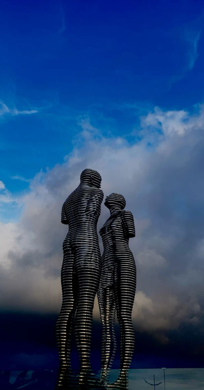

The statue of Ali and Nino - a moving sculptural composition in Batumi Boulevard, is one of the attractions of Georgia's Black Sea resort.
The 8-meter-high transparent, steel figures of woman and man, named Ali and Nino, move slowly to pass through each other
and gradually become one. This process repeats every 10 minutes.
The sculpture was created by famous Georgian artist and sculptor Tamar Kvesitadze. The monument has got the name of the novel
“Ali and Nino” by famous Azerbaijan writer Kurban Said. The novel "Ali and Nino" tells about the tragic love story of Azerbaijan
Muslim Ali Shirvashir and Georgian Christian Nino Kipiani. The events written in the book happened during the First World War in
the Caucasus. The statue of Ali and Nino was created in 2010 and represents a symbol of love, despite nationality or belief.
The statue is located 50 meters far from the "Panoramic Wheel".
